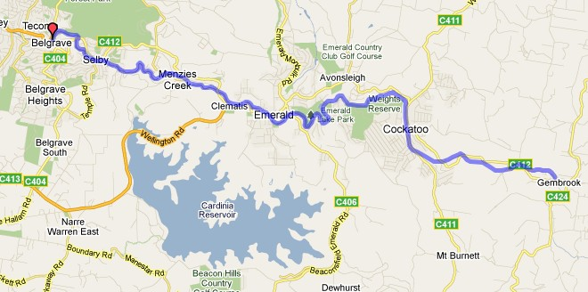

Victoria Narrow Gauge Gembrook - Cockatoo 1920s Route
Route design by Simon Gray
Overview
A recreation of the Victorian Railways' 2'6" gauge line from Cockatoo to Gembrook as it would have been in the 1920s.
Total mainline trackage: ~22km.

© Google Maps
Prototype Operator: Victorian Railways.